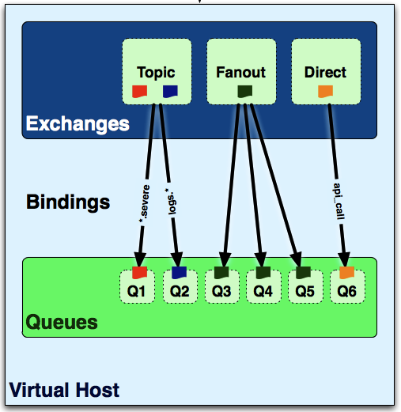
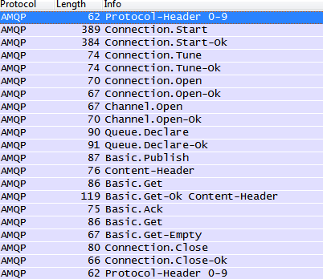
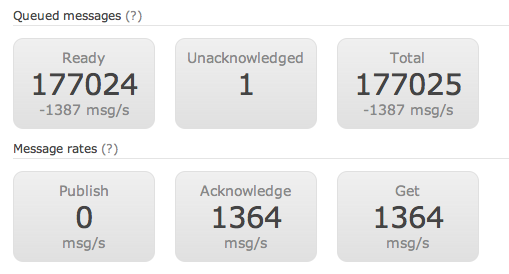
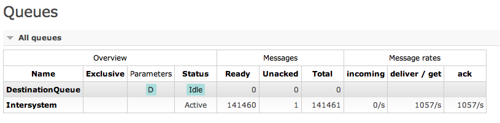
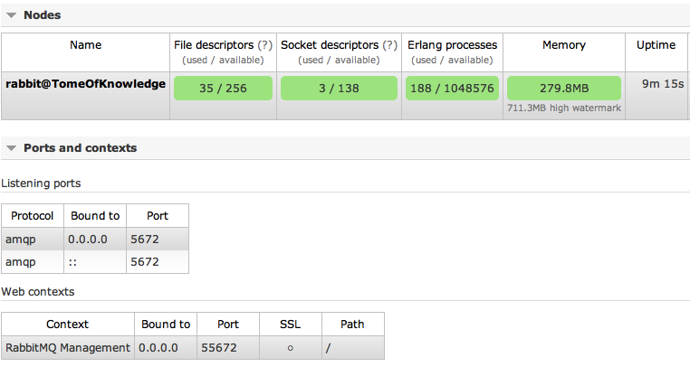
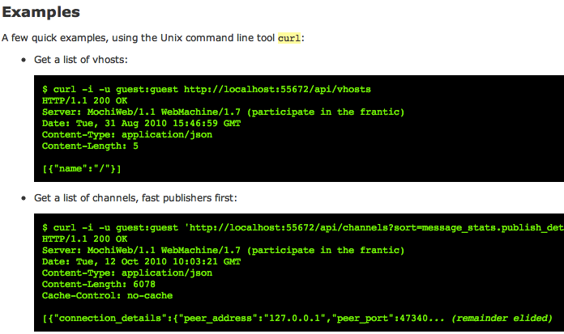

Your browser doesn't support the features required by impress.js, so you are presented with a simplified version of this presentation.
For the best experience please use the latest Chrome or Safari browser. Firefox 10 (to be released soon) will also handle it.
History of AMQP
- First developed at JPMorgan Chase
- Began as a collaborative effort and eventually involved Bank of America, RedHat, Cisco, Credit Suisse, Goldman Sachs, Microsoft and Novell -- which became known as the AMQP Working Group
- Conceived for trading and risk management systems so some terms (and features) reflect that origin
- Owned by OASIS
- Meant for middleware between internal and external systems
Basics of the Spec
- Producers send Messages with Routing Keys and Exchange Names to Brokers
- Brokers use Exchange rules to route / filter Messages
- Brokers then use Queues to store and forward Messages for Consumers
- Consumers receive Messages from the Broker for known Queues
- A RoutingKey (Producing) is congruent to a QueueName (Consumption)
- Exchanges only matter for routing / filtering rules
As a Sender
...I only care about the following:
- Broker
- Exchange
- Message Body (& properties)
- Routing Key
- Queue (sometimes)
As a Receiver
...I only care about the following:
- Broker
- Exchange
- Bindings
- Queue
- Message Body
The Purpose
- "Business messaging is provided by infrastructure and not by integration experts"
- Ubiquity - all the same everywhere
- Safety - nobody look at my messages
- Fidelity - trust in the delivery!
- Applicability - the more you use it, the more payoff
- Interoperability - easiest integration, evar
- Manageability - defined wire protocol, easy for reporting / managing
Types
- Connection - contains broker address
- Channel - a layer of communication over the channel
- Message - what you're sending
- Exchange - a logical hub for messages
- Queue - for ordering receiving of messages
- Binding - how queues relate to exchanges
Connection
- Endpoint - the broker
- Credentials - default "guest" account
- AuthMechanisms - how to authenticate (i.e. LDAP plugin?? AD much!?)
- VirtualHost - one broker server on a machine, many virtual hosts
- Client / Server Properties - dictionary values that can be exchanged
Channel
- In RabbitMQ's .NET implementation this is an IModel
- Data channel over the Connection
- Should NOT be shared between threads
- Provides AMQP operations in all implementations
Message
- Body
- Exchange
- Routing Key
- Basic Properties:
AppId - creating application id
CorrelationId - for correlating RPC methods
DeliveryMode - 1 is non-persistent, 2 is persistent
Priority - pretty self explanatory
UserId - who created the message
Immediate - if no one is listening, it's destroyed
Exchange
- Name
- Type
- Direct - for broadcasting to connected clients
- Fanout - multiple clients receive the same message
- Topic - for routing based on pattern matching on the routing key
- Headers - routing based on headers
Exchange Types

Queue
- Name
- Passive - won't be created but errors if it doesn't already exist
- Durable - peristence of messages
- Exclusive - only available to the connected client
- AutoDelete - it...auto-deletes messages...obviously
- NoWait - no response from broker (e.g. OneWay)
- Arguments - helpful to the broker for management
Binding
- Binds a queue to a particular exchange
- Types:
Unconditional - all messages from the exchange
Conditional fixed - routingKey must match queueName
Conditional pattern - routingKey matches some pattern in the queueName
Conditional multi-* - routingKey must match a number of names / patterns
Conditional algorithm - method using headers to match
Performance
- Macbook (1.7GHz Dual, 4GB)
1014 msg / sec (1M over 986.38 secs)
- PC (2.76Hz Quad, 8GB)
4076 msg / sec (1M over 245.311 secs)
- Mac-to-PC
440.72 msgs / sec (100k over 22.69 secs)
AMQP Over-the-wire
Extremely easy to profile with Wireshark.
AMQP is a standard TCP wire protocol so interoperability with other systems is easy.


- AMQP server implmentation
- Client libraries for .NET and Java
- Plugin Support
- Written in Erlang
(which itself was created for high concurrency)
- Open source but commercially supported by VMWare
- Built on the Open Telecom Platform
(OSS distro of Erlang used by Erickson & T-Mobile)
Management Plugin


Node Management

HTTP API

Hello World
Publish with a pre-determined routingKey, consumed with a queueName with the same value.
Can be durable if you want (or exclusive)

Topics
Publish with a routingKey, consumed with a queueName that matches a pattern.
Example: Imagine a message with a routingKey of: US.California.92604, now imagine a queue subscribing to US.*.* or
*.California.* -- those would match the routingKey and be delivered by the Exchange.

RPC
Publish to a service with a pre-determined routingKey (i.e. GetDate). The service listening on this queue receives the message and publishes back with a routingKey the requester gave. The requester is waiting for the response to come back.